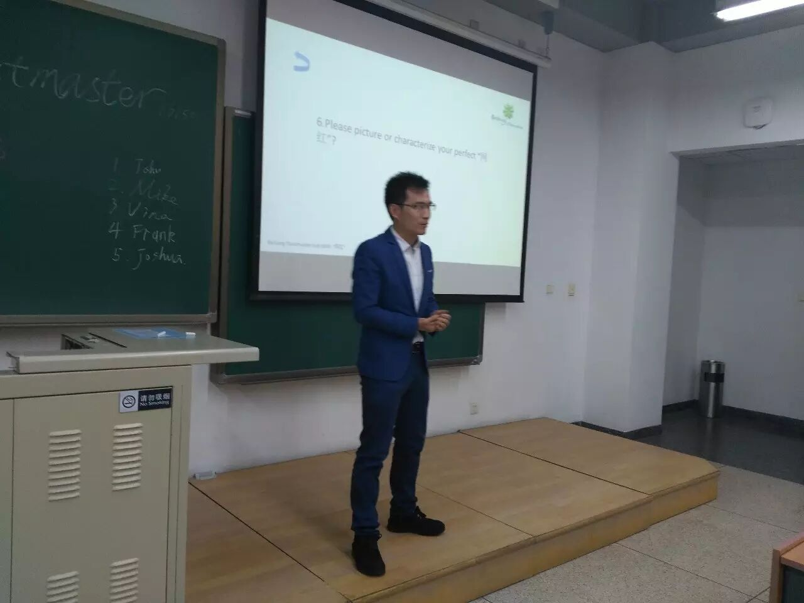
President Joshua - openning

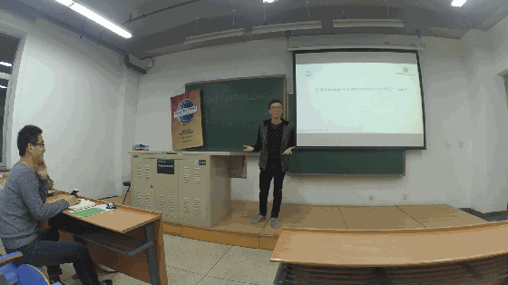
As the most one i think who can compete for the next president ,John delivered a great speech as usual, and if the day come, i will support him and
vote for him~
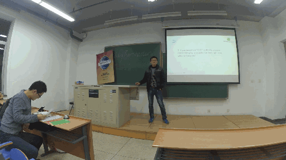
Mike chose the question which i prepared for him especially，and he made some judgements for Mayun's company at the position of him~.
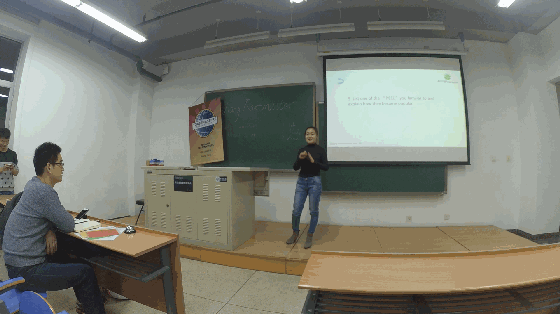
Beautiful guest Vina from Microsoft TMC~~
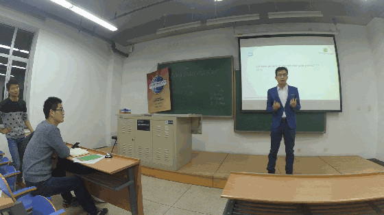
Joshua came back and brought his high-quality speech.
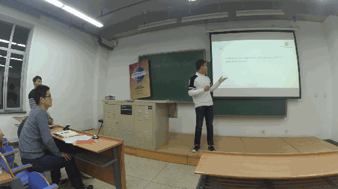
Frank is the first one who came to our meeting last night, which means that he was a borned toastmaster, just like his speech, completed, and coherent. and his smile has a special power, looking for your next visit Frank~
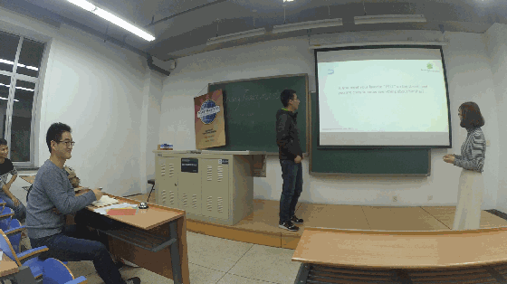
"Oh my god~!", the first word came out from Wendy astonished me absolutely, her gesture, her amazing face and her eye proved her great performance in the stage, even this is her first show in our beihang TMC stage, of course Andy did a well job as well ,they have perfect privity to each other~
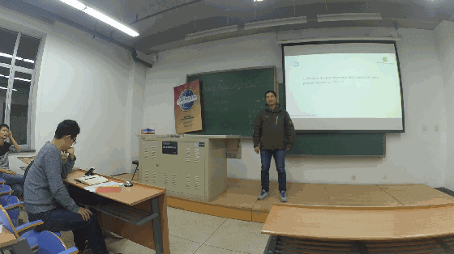
The reasons why more and more people became a "网红"， Flair had mentioned the ast developing internet and the common sense of people chasing for money and something more,and he represent her favourite "网红" i think -“奶茶妹妹“, who he still can't forget even got married, so this is the power of beauty?

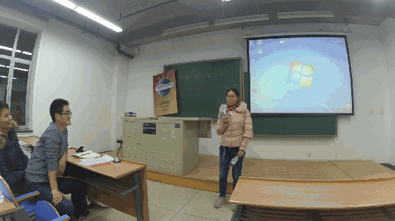
As the only female doctor in our club, Joy brought her greatly fabulous psychology
speech, telling us the differences in their performances in love between boy and girl, i remembered this is not the first time Joy brought her psychology speech, but all in all, the same feeling as usual, so gentle voices, humorous style, gracious atmosphere which made us indulged in her speech. just as the two catoon pictures in her hands now, so cute and lovely isn't it? anyway suggestions for the boys and girls who felt in love: speak less and do more~~


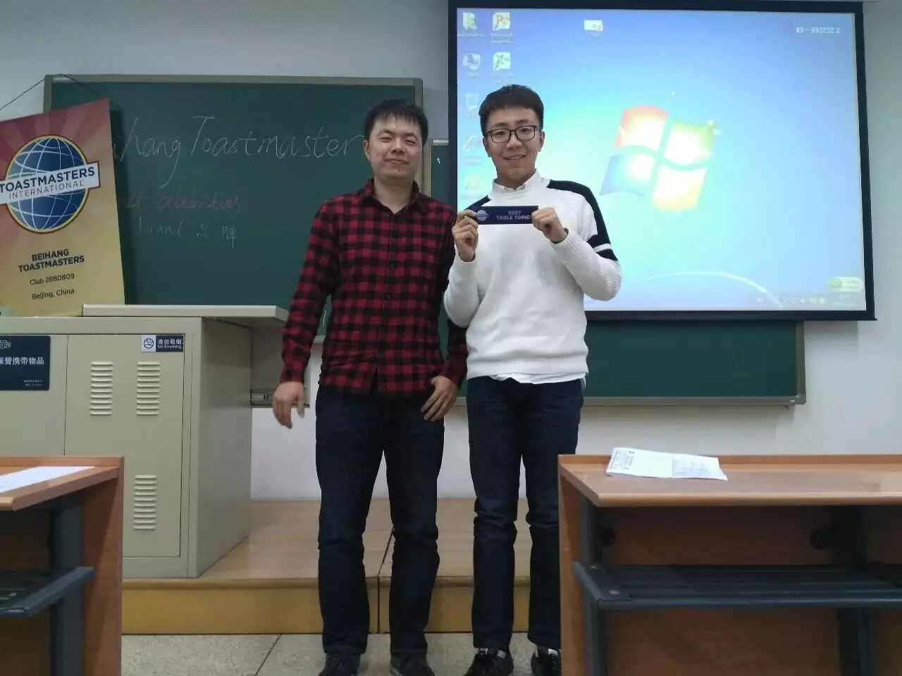
Best table topic speaker to Frank, for his wonderful table topic speech
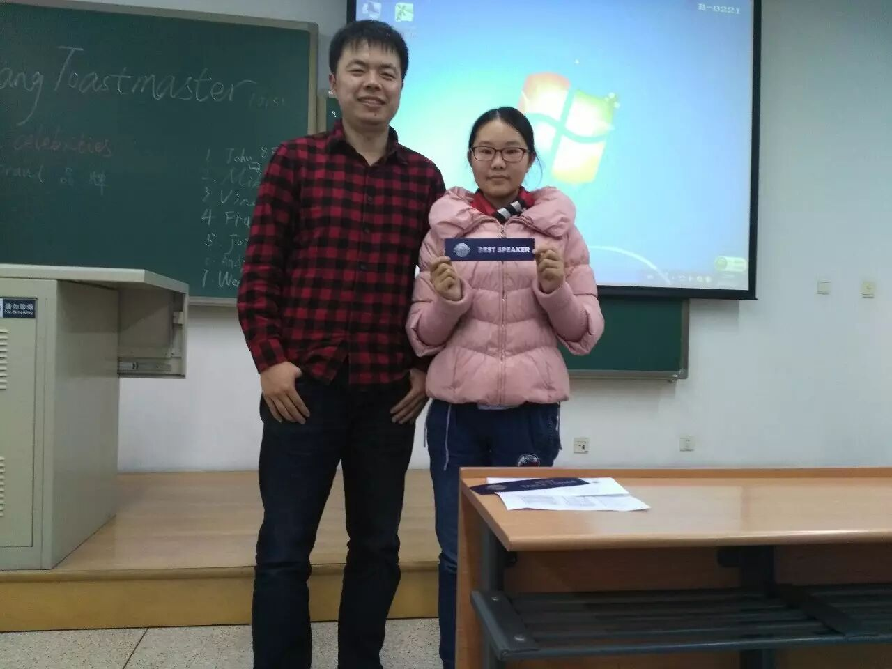
Best speaker to Joy, for her wonderful speech
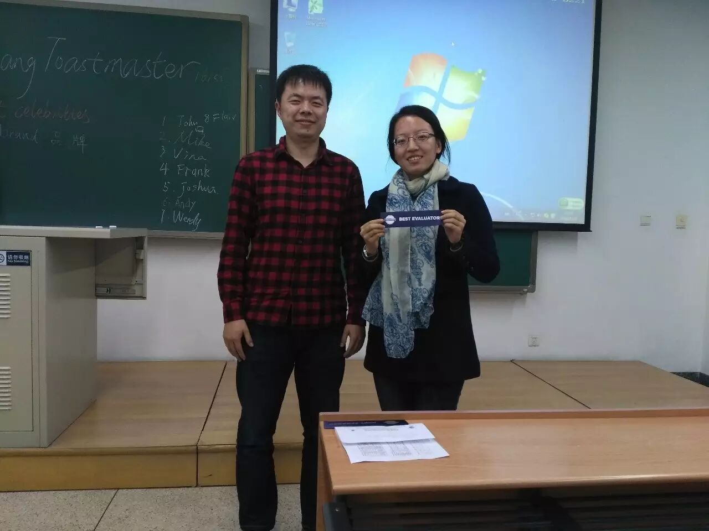
Best evaluator to Doris, for her great professional evaluation
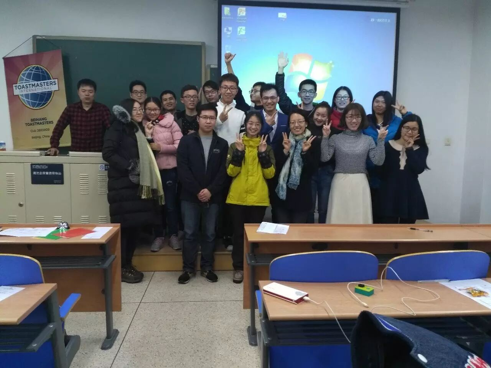
the final group picture
Beihang toastmaster welcome everyone who loves comunication
byspeaking English as well as chinese
if you want your voice be heard in public without no fear
come to our stage and show you
meet you at every Friday night 7:30pm
position: please wait notification before each meeting.....
The video links down below
CC-Joy 链接：http://pan.baidu.com/s/1hssiZMc 密码：15e8
TT-Wendy && Andy 链接：http://pan.baidu.com/s/1bM7pqm 密码：9a3y
TT-Flair 链接：http://pan.baidu.com/s/1dEPONux 密码：oknh
TT-Joshua 链接：http://pan.baidu.com/s/1c2cIdZq 密码：zgt2
TT-Vina 链接：http://pan.baidu.com/s/1nv8TM1j 密码：ss86
TT-Mike 链接：http://pan.baidu.com/s/1pLgz3SJ 密码：6z6e
TT-John 链接：http://pan.baidu.com/s/1bpHvHYR 密码：v6jm
TT-Frank 链接：http://pan.baidu.com/s/1kUCLyhL 密码：p5ni
https://mp.weixin.qq.com/s/um2NUAXg5-rqT-4XpEjtVQ
本页为抢救式本地归档，图文已永久保存。